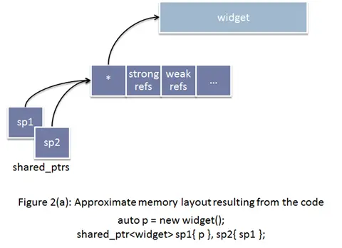
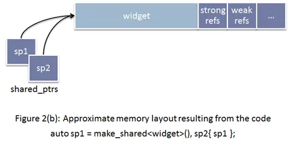

智能指针
使用时机
基本在原本new/delete成对出现的场合使用智能指针替代原始指针
动态数组使用智能指针
c++17之前
1 | //指定 default_delete 作为释放规则 |
不过这么做的缺点也是很明显的：
- 我们想管理的值是int[]类型的，然而事实上传给模板参数的是int
- 需要显示提供delete functor
- 不能使用
std::make_shared，无法保证异常安全 - c++17前shared_ptr未提供
opreator[]，所以当需要类似操作时不得不使用sp3.get()[index]的形式
c++17可以这样写（不知道为啥我的c++14也可以用这样的）
我也推荐的方法
1 | std::shared_ptr<int[]> sp3(new int[10]()); |
使用被极大得简化了，然而还是有点问题，那就是无法使用std::make_shared，而我们除非指定自己的delete functor，否则我们应该尽量使用std::make_shared。
或者使用unique_ptr
1 | unique_ptr<int[]> ptr = make_unique<int[]>(10); |
或者使用vector
c++20可以这样写
1 | //管理有10个int元素的动态数组的shared_ptr |
非常好用
C++11_std::make_shared的优点
shared_ptr维护引用计数需要的信息
- 强引用, 用来记录当前有多少个存活的 shared_ptrs 正持有该对象. 共享的对象会在最后一个强引用离开的时候销毁( 也可能释放).
- 弱引用, 用来记录当前有多少个正在观察该对象的 weak_ptrs. 当最后一个弱引用离开的时候, 共享的内部信息控制块会被销毁和释放 (共享的对象也会被释放, 如果还没有释放的话).
使用原始的new函数创建shared_ptr
- 首先是原始的new分配了原始对象, 然后将这个对象传递给 shared_ptr (即使用 shared_ptr 的构造函数) , shared_ptr 对象只能单独的分配控制块。
- 控制块包含被指向对象的引用计数以及其他，也就是说，控制块的内存是在std::shared_ptr的构造函数中分配的。

使用make_shared创建shared_ptr
- 如果选择使用 make_shared 的话, 内存分配的动作, 可以一次性完成，因为std::make_shared申请一个单独的内存块来同时存放指向的对象和控制块，这减少了内存分配的次数, 而内存分配是代价很高的操作。
- 同时，使用std::make_shared消除了一些控制块需要记录的信息，减少了程序的总内存占用。

make_shared实现异常安全
- 在shared_ptr的使用过程中，不能在函数实参中创建shared_ptr，如下：
1 | //Define |
C++ 是不保证参数求值顺序, 以及内部表达式的求值顺序的, 所以可能的执行顺序如下:
1 | new Lhs(“foo”)) |
如果在第2步的时候，发生了异常，第一步申请的 Lhs 对象内存就泄露了，
产生这个问题的核心在于, shared_ptr 没有立即获得裸指针，所以就有可能产生内存泄漏。当然，这个问题是可以这样解决：
1 | auto lhs = std::shared_ptr<Lhs>(new Lhs("foo")); |
但，最推荐的做法是
1 | F(std::make_shared<Lhs>("foo"), std::make_shared<Rhs>("bar")); |
因为，申请原始对象和将原始对象裸指针赋值给shared_ptr是在同一个执行序列里，失败的话一起失败，成功就一起成功，这样就能保住创建的原始对象裸指针能安全的存放到std::shared_ptr中
使用make_shared的缺点
- 创建的对象如果没有公有的构造函数时，make_shared无法使用。
- 使用make_shared内存可能无法及时回收，对内存要求要的场景需要注意。
注意
智能指针尽量不要指向vector容器类型，因为当vector扩容时，智能指针便不再生效，引起程序的崩溃或未定义的行为。
new int[10]和new int[10]()区别
new int[10]的值初始化后-1760269552 683 -1760296624 683 0 0 0 0 0 0不全为0；
new int[10]()初始化后0 0 0 0 0 0 0 0 0 0 全为0
参考
shared_ptr和动态数组 - apocelipes - 博客园 (cnblogs.com)
C++11 shared_ptr智能指针（超级详细） (biancheng.net)
C++11_std::make_shared的优点 - 简书 (jianshu.com)
c++ - make_unique 和 make_shared 处理数组时的区别 - IT工具网 (coder.work)